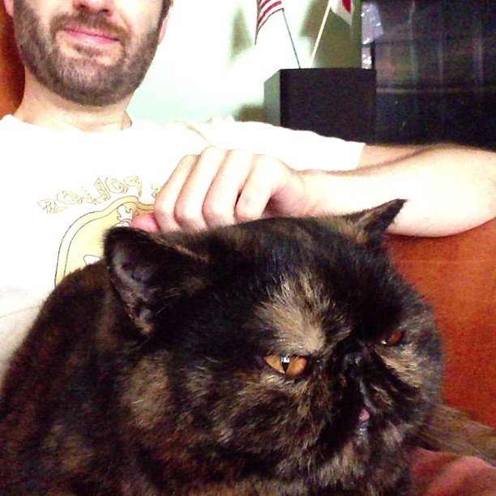

The Art of Ruby
A diversion: Hegel
"How to fake your way through Hegel"
Dialectics
Thesis -> Antithesis -> Synthesis
(A v ~A) & (A ∧ ~A)
not
A ∧ ~A
or
A v ~A
Cat behavior
Cuddly, loving, and absolutely not caring
Living & dying
Thesis: Ruby
松本行弘 (Matz)
Ruby is a language designed in the following steps:
* take a simple lisp language (like one prior to CL).
* remove macros, s-expression.
* add simple object system (much simpler than CLOS).
* add blocks, inspired by higher order functions.
* add methods found in Smalltalk.
* add functionality found in Perl (in OO way).
So, Ruby was a Lisp originally, in theory.
Let's call it MatzLisp from now on. ;-)
It would be understandable if Lisp’s charm had not been accepted by everyone in a year or two, but for 50+ years it hasn’t reached the mainstream, could it be because it fundamentally does not match our expectation? There is a huge difference between human friendly languages and languages that have smallest, cleanest cores, and I am afraid the gap between them might not close even in a hundred years. As for what future programming languages should look like, I think they should have a runtime model similar to that of Lisp and be easily understandable by humans. All of a sudden, Ruby looks a lot closer to that, doesn’t it?
Ruby: simple
but not easy
Ruby "magic"
Ruby is actually
very, very simple.
Everything* is an object.
Even objects. And classes.
class Class
# ...
end
Foo = Class.new
Bar = Class.new(Foo)
Everything* is an object.
Even objects. And classes.
class Foo
def hello
puts "hello"
end
end
Foo.new.hello
# => hello
Everything* is an object.
Even objects. And classes.
o = Object.new
def o.hello
puts "hello"
end
o.hello
# => hello
Ruby 2.1: method definitions
# old
def foo() end # => nil
# new
def foo() end # => :foo
Ruby 2.1: method definitions
# old
class Foo
def foo; end
private :foo
def bar; end
private :bar
end
# new
class Foo
private def foo; end
private def bar; end
end
Jim Weirich
Rake
directory "tmp"
file "hello.tmp" => "tmp" do
sh "echo 'Hello' >> 'tmp/hello.tmp'"
end
Rspec-given
Given(:stack) { stack_with(initial_contents) }
Invariant { stack.empty? == (stack.depth == 0) }
context "with no items" do
Given(:initial_contents) { [] }
Then { stack.depth == 0 }
end
Ukulele :)
_why
Poigant Guide

Unholy
.ooo
'OOOo
~ p ooOOOo tion ~
.OOO
oO %% a little
Oo fast language.
'O
(o)
___/ /
/ \
/v^ ` ,
(...v/v^/
\../::/
\/::/
Camping
Yusuke Endoh
v=0000;eval$s=%q~d=%!^Lcf<LK8, _@7gj*LJ=c5nM)Tp1g0%Xv.,S[<>YoP
4ZojjV)O>qIH1/n[|2yE[>:ieC "%.#% :::##" 97N-A&Kj_K_><wS5rtWk@*a+Y5
yH?b[F^e7C/56j|pmRe+:)B "##% ::##########" O98(Zh)'Iof*nm.,$C5Nyt=
PPu01Avw^<IiQ=5$'D-y? "##: ###############" g6`YT+qLw9k^ch|K'),tc
6ygIL8xI#LNz3v}T=4W "# #. .####:#######" lL27FZ0ij)7TQCI)P7u
}RT5-iJbbG5P-DHB<. " ##### # :############" R,YvZ_rnv6ky-G+4U'
$*are@b4U351Q-ug5 " #######################" 00x8RR%`Om7VDp4M5
PFixrPvl&<p[]1IJ " ############:#### %#####" EGgDt8Lm#;bc4zS^
y]0`_PstfUxOC(q " .#############:##% .## ." /,}.YOIFj(k&q_V
zcaAi?]^lCVYp!; " %% .################. #. " ;s="v=%04o;ev"%
(;v=(v-($*+[45, ":####: :##############% : " ])[n=0].to_i;)%
360)+"al$s=%q#{ "%######. ######### " ;;"%c"%126+$s<<
126}";d.gsub!(/ "##########. #######% " |\s|".*"/,"");;
require"zlib"|| "########### :######. " ;d=d.unpack"C*"
d.map{|c|n=(n|| ":#########: .######: . " )*90+(c-2)%91};
e=["%x"%n].pack " :#######% :###### #: " &&"H*";e=Zlib::
Inflate.inflate( " ######% .####% :: " &&e).unpack("b*"
)[0];22.times{|y| " ####% %### " ;w=(Math.sqrt(1-(
(y*2.0-21)/22)**(; " .###: .#% " ;2))*23).floor;(w*
2-1).times{|x|u=(e+ " %## " )[y*z=360,z]*2;u=u[
90*x/w+v+90,90/w];s[( " #. " ;y*80)+120-w+x]=(""<<
32<<".:%#")[4*u.count(( " . " ;"0"))/u.size]}};;puts\
s+";_ The Qlobe#{" "*18+ ( "# :#######" ;"Copyright(C).Yusuke End\
oh, 2010")}";exit~;_ The Qlobe Copyright(C).Yusuke Endoh, 2010
Ruby Bug #5400: Remove
flip-flops in 2.0
Hello,
I'm one of the few users of flip-flop.
W, H = 44, 54
c = 7 + 42 * W
a = [0] * W * H
g = d = 0
f = proc do |n|
a[c] += 1
o = a.map {|z| " :#"[z, 1] * 2 }.join.scan(/.{#{W * 2}}/)
puts "\f" + o.map {|l| l.rstrip }.join("\n")
sleep 0.005
d += 1 - 2 * ((g ^= 1 << n) >> n)
c += [1, W, -1, -W][d %= 4]
end
1024.times do
!!(!!(!!(!!(!!(!!(!!(!!(!!(true...
f[0])...f[1])...f[2])...
f[3])...f[4])...f[5])...
f[6])...f[7])...f[8])
end
Sorry for off-topic :-)
I have no objection to deletion, but I'm just curious. Why do you want to delete it aggressively?
Aaron Patterson
Gorbachev Puff-Puff Thunderhorse
SEA-TAC Google Youtube Facebook
phuby
php = Phuby::Runtime.new
php.start
php.eval('$hello = "world"')
assert_equal "world", php['hello']
php.stop
Journey
ActiveRecord
MiniTest::Emoji
Fiddle
module IAmAHorriblePerson
def unset flag
value = _wrap self
flags = 8.times.map { |i| value[i] }.pack('C8').unpack('Q').first
[flags & ~flag].pack('Q').unpack('C8').each_with_index { |n,i|value[i] = n }
end
def class= k
value = _wrap self
[k.object_id<<1].pack('Q').unpack('C8').each_with_index {|n,i|value[i+8]=n}
end
def _wrap klass; Fiddle::Pointer.new Fiddle.dlwrap klass; end
def unfreeze!; unset(1 << 11); end
def untaint!; unset(1 << 8); end
end
class Object; include IAmAHorriblePerson; end
Fiddle
x = Object.new
p x.class # => Object
x.class = Class.new { def lol; 'lol'; end }
p x.class # => #
p x.lol # => "lol"